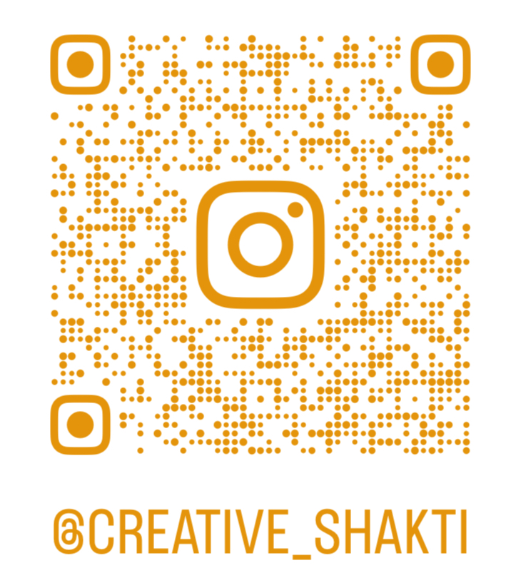

Bezoek
SHAKTI Snit & Naad Studio
📍 Booshovestraat 44 bus 4, 2100 Deurne, België
📍 Gersstraat 12,2861
Onze
Lieve Vrouw Waver, België
📅 Enkel na afspraak via email, telefoon en WhatsApp
☎️ +32/486.73.63.37
📩 nuni2005@hotmail.com
Ma–Zo: 10:00–22:00.
Wachttijd: 2–10 dagen (afhankelijk van de opdracht en materiaalbeschikbaarheid)
🚗 Aan huis mogelijk: met kilometervergoeding € 0,50 per kilometer
Kostenvergoedingen - Vlaams Steunpunt Vrijwilligerswerk
Facebook
Instagram

💳 Betaling met cash of payconiq
Btw BE 0871 261 918